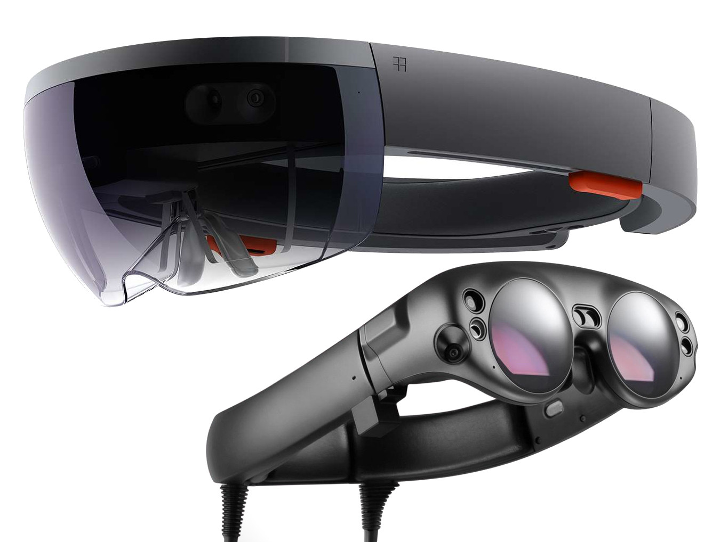
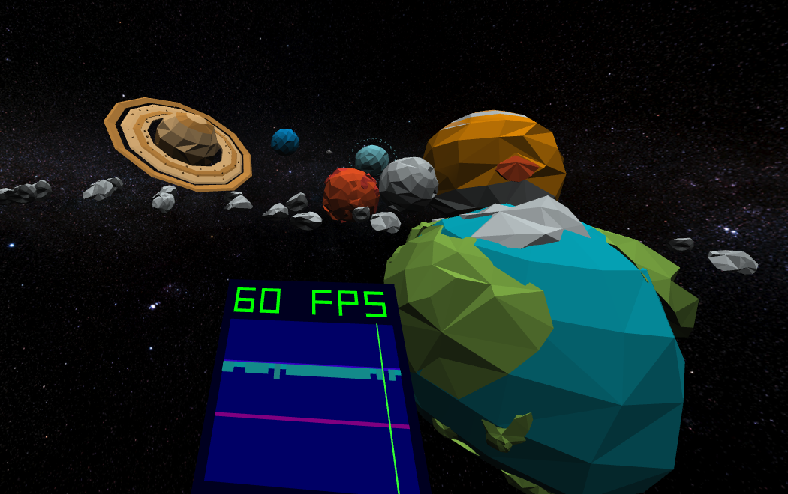
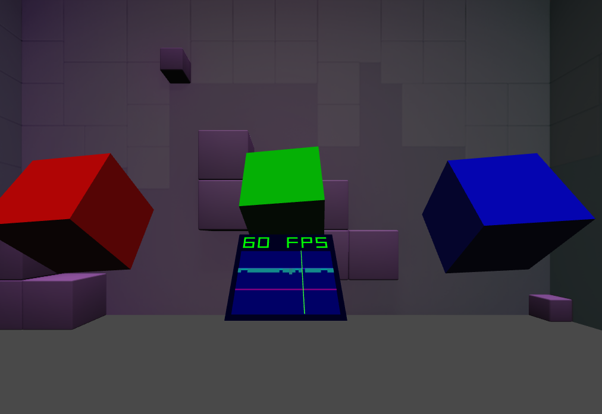
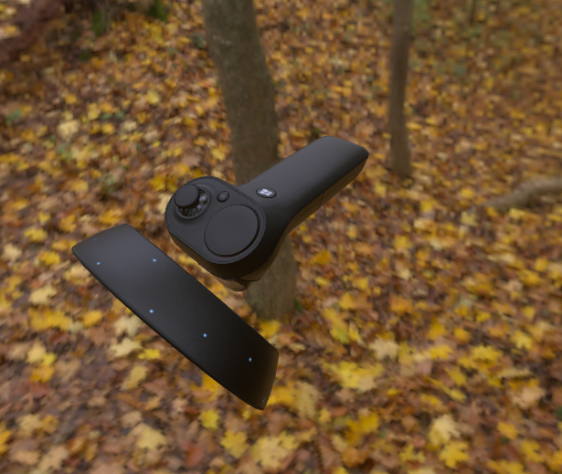

The WebXR Device API provides access to input (pose information from headset and controllers) and output (hardware display) capabilities commonly associated with Virtual Reality (VR) and Augmented Reality (AR) devices. It allows you develop and host VR and AR experiences on the web.
You can read more about the goals of this standardisation effort by reading the WebXR Explainer.
What does this mean...

For phones:
Enable VR by providing pose information and allowing the WebGL scene to be rendered side by side to be placed in a headset like the Cardboard
Enable AR by using the platforms AR capabilities such as ARCore to render the WebGL scene onto the users environment like a magic window.
For Desktops:
Desktop computers can make use of tethered VR hardware such as the Oculus Rift or HTC Vive to display the VR scene
For standalone AR Headsets:
Enable AR by using the platforms AR capabilities to render the WebGL scene immersively onto the users environment.
For standalone VR Headsets:
Enable VR by rendering the scene using the platforms VR capabilities.
Try out some Demos
A demo of VR and AR with the WebXR Device API, embedded with an iframe, for iframes allow="xr-spatial-tracking" is required.

This sample demonstrates use of an 'inline' XRSession to present content on the page prior to entering XR presentation with an immersive session.This sample demonstrates basic tracking and rendering of XRInputSources. It does not respond to button presses or other controller interactions.

This sample demonstrates teleporting the viewer by updating the XRSession reference space.
Benefits of doing XR on the Web
Instant deployment to every XR platform with a WebXR enabled Web Browser
Future proof experiences, new AR and VR hardware comes about regularly, your experience should continue working on new hardware without needing to push new code.
An experience can choose to target both VR and AR, Handheld and head mounted devices with a single release. Minimal code changes needed to support VR and AR together.
No app stores or large downloads required, users get immediate access to your experience without needing to leave your web site.
Since the rendering is handled by WebGL, which has been around since 2011, you gain the benefit of WebGL's rich development tool ecosystem and a large, active developer community.
The demo is designed as a playground where you can try different experiences and interactions in VR, and introduce newcomers to the VR world and its special language in a smooth, easy and nice way.
Dive into the creative process of avant-pop artist Matthew Dear from his new single of the same name. Floating above you is a magic eight-ball reciting lyrics. In the distance planetary objects orbit around you to the beat. And directly ahead is an elastic donut which bounces, bulges, and twists to the complex melodies.
Getting started building a WebXR Website
These are brief guides to building a site which uses and AR and VR.
The WebXR device API relies on graphics APIs like WebGL & WebGL2 to work, these graphics libraries and frameworks come with WebXR support built in.
WebXR Emulator extension, for Chrome and Firefox enables users and developers to run and test WebXR content in desktop browsers without using a real XR device.
The extension will emulate the WebXR API on browsers that don’t support it yet and also provide a list of XR devices with their controllers to emulate.

WebXR Input Profiles
W3C Immersive Web Working Group
This repo provides a javascript library for managing known motion controller profiles, loading the most ideal known profile for a supplied input source, and creating a MotionController object that binds them together. Developers can use this library to interact with the conceptual components of an input source, rather than each individual button or axis.